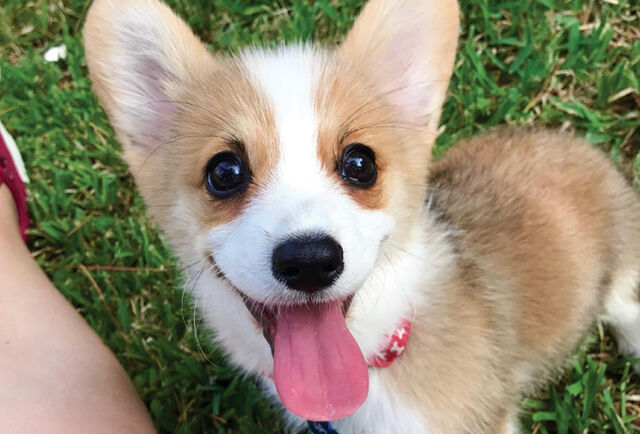
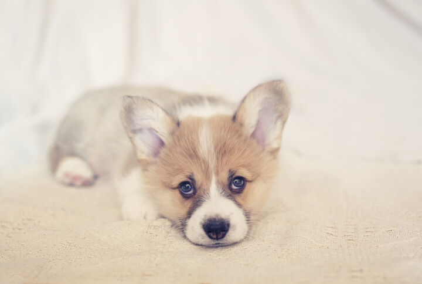
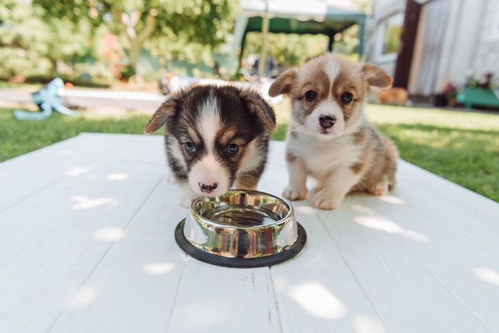
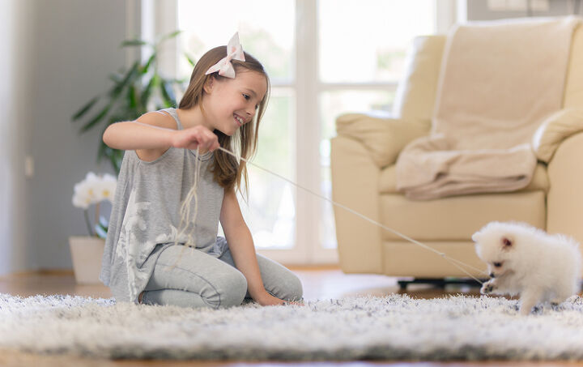

普通子供は2~3ヶ月の時に分譲されますが。 子供は生まれたばかりなので免疫力が低いです。
また、急な環境変化でストレスをたくさん受けます。
そのため、子どもが急に血便または水っぽい便をしたり、
ご飯をよく食べなかったり、肌の赤みなどがないか観察が必要です!

一度に多い回数を与えるより適度に配布する程度で1日3~4回適切に分配した方が良いでしょう。
もし、十分な飼料を与えてくれないと、低血糖で倒れることもあるので、
適切な飼料の配分と10時間以上空腹が生じないよう気をつけてください。

排便訓練は生後2ヶ月以内に決まりますので、分譲直後に行うことをおすすめします!
まずトイレで使う場所を決めることが重要です。 指定した場所の周辺にパッドを敷きながら、
ゆっくりパッドを小さくしてあげると良いでしょう。 排便訓練には忍耐が必要ですので、愛情を持ってお待ちください。